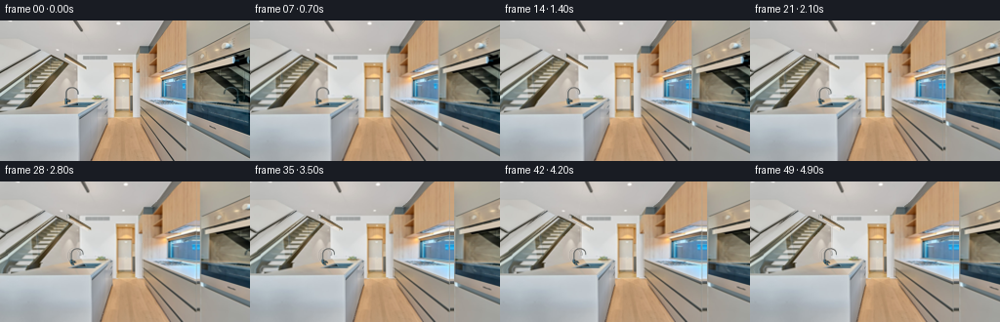
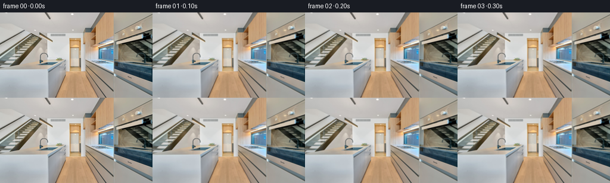
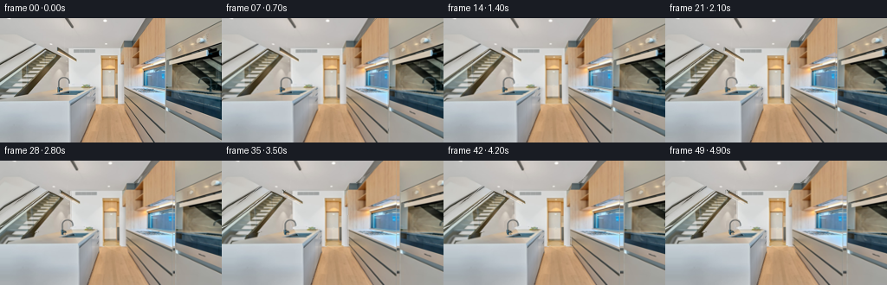
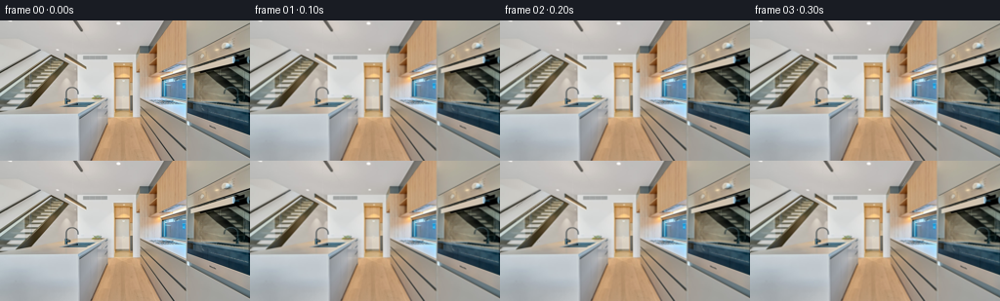
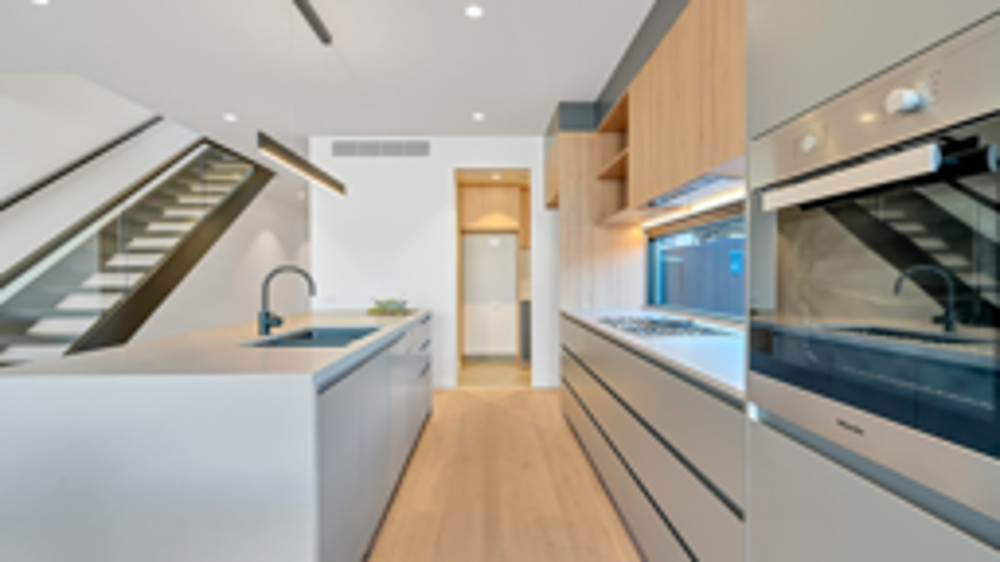
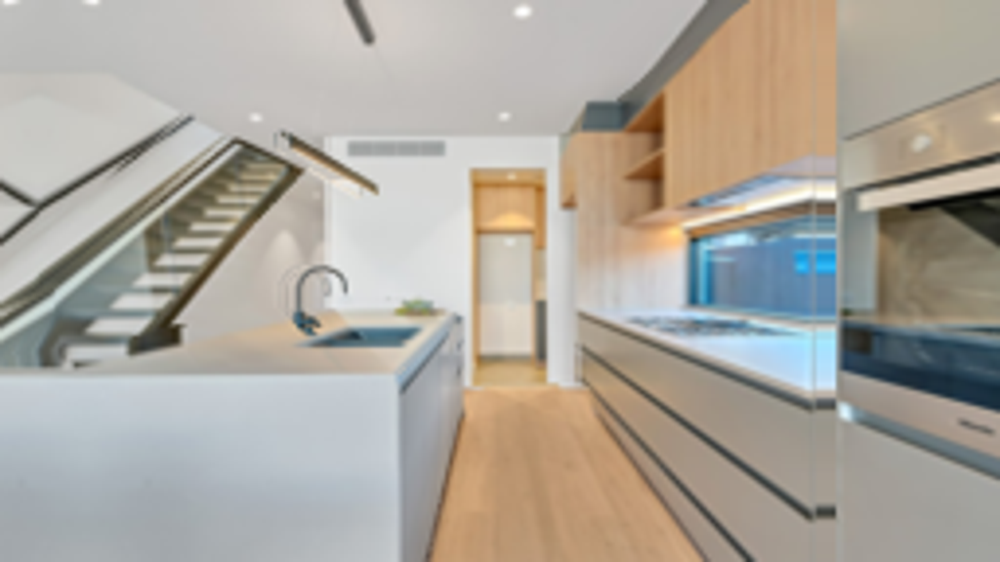
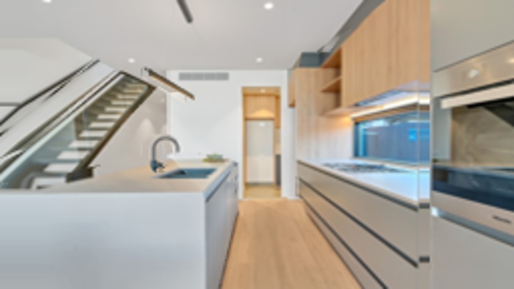

CODING AGENTS AS PIXEL WORLD MODELS
traex/GPT-6.1-Sol · static_080_turn_1
点击播放 · 原生 RGB 像素
逐轮保存的候选
回放视频、检查图与代码变化。
每份候选均可单独播放。实际图片检查记录在下方工具轨迹中。
候选 01播放与检查图
点击播放 · 原生 RGB 像素

展开代码变化
--- 上一保存版本
+++ 本次保存版本
@@ -0,0 +1,199 @@
+"""A static, photograph-textured room viewed by a laterally moving camera.
+
+No scene elements are animated. For a rectified leftward camera translation,
+the projection of a point changes only by dx = focal_length * translation / Z.
+Piecewise planar reciprocal depths preserve the straight architectural lines.
+The little newly visible slivers use adjacent surface texture, not optical flow.
+"""
+from pathlib import Path
+
+import cv2
+import numpy as np
+from PIL import Image, ImageDraw
+
+import artifact_io
+
+
+ROOT = Path(__file__).resolve().parent
+W, H = 256, 144
+S = 3
+PAD = 64
+
+
+def polygon(points, width, height):
+ mask = Image.new("L", (width, height))
+ ImageDraw.Draw(mask).polygon(
+ [((x + PAD) * S, y * S) for x, y in points], fill=255
+ )
+ return np.asarray(mask) > 0
+
+
+def make_scene(image):
+ height, width = H * S, (W + PAD) * S
+ yy, xx = np.mgrid[:height, :width].astype(np.float32)
+ x = (xx + .5) / S - PAD - .5
+ y = (yy + .5) / S - .5
+
+ # The image border intersects an unadorned wall, the lower stairs, and
+ # the near face of the island. Continue these existing surface textures.
+ sx = np.maximum(x, -x - 1)
+ sy = y.copy()
+ stair_extension = (x < 0) & (y > 52) & (y < 94)
+ sy[stair_extension] = y[stair_extension] + 1.32 * x[stair_extension]
+ sx = np.clip(sx, 0, W - 1)
+ sy = np.clip(sy, 0, H - 1)
+ texture = cv2.remap(image, sx, sy, cv2.INTER_CUBIC,
+ borderMode=cv2.BORDER_REFLECT_101)
+
+ # Each surface is assigned an affine inverse depth, in common arbitrary
+ # units. Camera translation is expressed in pixels per inverse-depth unit.
+ q = np.full((height, width), .265, np.float32)
+ material = np.zeros((height, width), np.int16)
+ coefficients = {0: (0., 0., .265)}
+
+ def surface(idx, points, a, b, c):
+ m = polygon(points, width, height)
+ q[m] = (a * x + b * y + c)[m]
+ material[m] = idx
+ coefficients[idx] = (a, b, c)
+
+ # Left wall, ceiling and exposed timber floor.
+ surface(1, [(-PAD, 0), (80, 34), (80, 99), (-PAD, 144)],
+ -.005, 0, .65)
+ surface(2, [(-PAD, 0), (174, 0), (142, 34), (79, 35),
+ (66, 34), (24, 20), (-PAD, 20)],
+ 0, -.0145, .87)
+ surface(3, [(-PAD, 144), (108, 99), (141, 98),
+ (256, 144)], 0, .0132, -.8316)
+
+ # Stationary stair treads, stringers, and handrails.
+ surface(4, [(-PAD, 115), (-PAD, 105), (0, 74), (52, 35),
+ (71, 42), (18, 91), (0, 94)],
+ -.002, .007, .405)
+ surface(5, [(-PAD, 105), (-PAD, 101), (0, 59), (41, 29),
+ (42, 30), (0, 62)],
+ -.002, .007, .405)
+ surface(6, [(66, 34), (66, 38), (88, 50), (88, 47)],
+ -.002, .007, .405)
+
+ # The galley cabinetry projects out from the far wall. Its inverse depth
+ # grows horizontally along the right wall, exactly as for a vertical plane.
+ surface(7, [(143, 26), (156, 26), (161, 17), (178, 0),
+ (256, 0), (256, 144), (166, 144), (144, 100)],
+ .019, 0, -2.432)
+ surface(8, [(191, 0), (256, 0), (256, 144), (191, 144)],
+ .023, 0, -2.844)
+
+ # Island: one horizontal top and two vertical faces. Shared corners have
+ # matching depth so they stay attached throughout the camera move.
+ surface(9, [(-PAD, 96), (80, 96), (111, 81), (106, 79),
+ (94, 79), (64, 79), (-PAD, 99)],
+ 0, .060, -4.32)
+ surface(10, [(80, 96), (111, 81), (110, 104), (93, 144),
+ (80, 144)], -.03, 0, 3.84)
+ surface(11, [(-PAD, 96), (80, 96), (80, 144), (-PAD, 144)],
+ 0, 0, 1.44)
+
+ # The faucet and the tiny plant are rigid objects at the back of the island.
+ # A colour-qualified silhouette keeps the visible wall through the faucet
+ # arch at its own depth instead of moving a rectangle of background.
+ faucet_roi = ((x >= 65) & (x <= 82) & (y >= 67) & (y < 84))
+ dark = np.mean(texture.astype(np.float32), axis=2) < 151
+ faucet = faucet_roi & dark
+ q[faucet] = .58
+ material[faucet] = 12
+ coefficients[12] = (0., 0., .58)
+ surface(13, [(94, 80), (94, 78), (97, 76), (100, 76),
+ (103, 77), (107, 79), (106, 81)], 0, 0, .46)
+
+ # Segment rows into planar pieces once; projection then uses these exact
+ # same immutable geometry and source textures for every frame.
+ rows = []
+ for r in range(height):
+ change = np.r_[0, np.flatnonzero(np.diff(material[r])) + 1, width]
+ segments = []
+ for start, end in zip(change[:-1], change[1:]):
+ mid = int(material[r, start])
+ a, b, c = coefficients[mid]
+ left = start / S - PAD - .5
+ right = end / S - PAD - .5
+ row_y = (r + .5) / S - .5
+ offset = b * row_y + c
+ # Safe continuation of the back surface for a newly visible sliver.
+ # Taking the colour just inside an edge avoids extending its dark
+ # foreground antialiasing into the uncovered background.
+ er = max(start, end - 1 - S)
+ el = max(start, er - 2 * S)
+ fill = np.median(texture[r, el:er + 1], axis=0)
+ segments.append((left, right, a, offset, fill))
+ rows.append(segments)
+ return texture, rows
+
+
+def project(texture, rows, distance):
+ out_w, out_h = W * S, H * S
+ screen_x = (np.arange(out_w, dtype=np.float32) + .5) / S - .5
+ map_x = np.zeros((out_h, out_w), np.float32)
+ map_y = np.repeat(np.arange(out_h, dtype=np.float32)[:, None], out_w, axis=1)
+ fill_image = np.zeros((out_h, out_w, 3), np.float32)
+ is_texture = np.zeros((out_h, out_w), bool)
+
+ for r, pieces in enumerate(rows):
+ zbuffer = np.full(out_w, -1e6, np.float32)
+ # True source fragments win over any extrapolation fragment. The
+ # reciprocal-depth buffer resolves stair/island/background occlusions.
+ for left, right, a, offset, fill in pieces:
+ scale = 1. + distance * a
+ tx_left = scale * left + distance * offset
+ tx_right = scale * right + distance * offset
+ lo = max(0, int(np.ceil((tx_left + .5) * S - .5)))
+ hi = min(out_w, int(np.ceil((tx_right + .5) * S - .5)))
+ if hi <= lo:
+ continue
+ source_x = (screen_x[lo:hi] - distance * offset) / scale
+ depth = a * source_x + offset
+ win = depth >= zbuffer[lo:hi]
+ dst = np.arange(lo, hi)[win]
+ zbuffer[dst] = depth[win]
+ map_x[r, dst] = (source_x[win] + PAD + .5) * S - .5
+ is_texture[r, dst] = True
+
+ # A discontinuity with nearer geometry on its right uncovers a narrow
+ # portion of the left, farther surface. Continue that surface only.
+ gaps = ~is_texture[r]
+ if gaps.any():
+ for left, right, a, offset, fill in pieces:
+ tx = (1. + distance * a) * right + distance * offset
+ lo = max(0, int(np.ceil((tx + .5) * S - .5)))
+ hi = min(out_w, lo + int(np.ceil(24 * S)))
+ if lo >= hi:
+ continue
+ eligible = gaps[lo:hi]
+ if not eligible.any():
+ continue
+ dst = np.arange(lo, hi)[eligible]
+ # The closest left boundary is the correct revealed neighbour.
+ fill_image[r, dst] = fill
+ sampled = cv2.remap(texture, map_x, map_y, cv2.INTER_LINEAR,
+ borderMode=cv2.BORDER_REPLICATE)
+ result = np.where(is_texture[..., None], sampled, fill_image)
+ result = cv2.resize(result.astype(np.float32), (W, H),
+ interpolation=cv2.INTER_AREA)
+ return np.clip(np.rint(result), 0, 255).astype(np.uint8)
+
+
+def main():
+ original = np.asarray(Image.open(ROOT / "first_frame.png").convert("RGB"))
+ texture, rows = make_scene(original)
+ frames = [original.copy()]
+ for i in range(1, 50):
+ t = i / 49.
+ # A nearly uniform physical dolly, with a gentle start and stop.
+ travel = t - np.sin(2 * np.pi * t) * .065
+ frames.append(project(texture, rows, 15.0 * travel))
+ frames = np.stack(frames)
+ artifact_io.save(frames, ROOT)
+
+
+if __name__ == "__main__":
+ main()
候选 02播放与检查图
点击播放 · 原生 RGB 像素


展开代码变化
--- 上一保存版本
+++ 本次保存版本
@@ -36,10 +36,10 @@
# The image border intersects an unadorned wall, the lower stairs, and
# the near face of the island. Continue these existing surface textures.
- sx = np.maximum(x, -x - 1)
+ sx = np.maximum(x, 0)
sy = y.copy()
stair_extension = (x < 0) & (y > 52) & (y < 94)
- sy[stair_extension] = y[stair_extension] + 1.32 * x[stair_extension]
+ sy[stair_extension] = y[stair_extension] + .80 * x[stair_extension]
sx = np.clip(sx, 0, W - 1)
sy = np.clip(sy, 0, H - 1)
texture = cv2.remap(image, sx, sy, cv2.INTER_CUBIC,
@@ -97,9 +97,13 @@
# The faucet and the tiny plant are rigid objects at the back of the island.
# A colour-qualified silhouette keeps the visible wall through the faucet
# arch at its own depth instead of moving a rectangle of background.
- faucet_roi = ((x >= 65) & (x <= 82) & (y >= 67) & (y < 84))
- dark = np.mean(texture.astype(np.float32), axis=2) < 151
- faucet = faucet_roi & dark
+ faucet = polygon([(65, 86), (65, 80), (66, 77), (66, 73),
+ (67, 70), (69, 68), (72, 67), (76, 67),
+ (79, 69), (81, 71), (82, 76), (79, 77),
+ (78, 73), (77, 71), (75, 70), (72, 70),
+ (70, 72), (69, 75), (69, 79), (73, 79),
+ (75, 80), (75, 82), (72, 83), (70, 83),
+ (70, 86)], width, height)
q[faucet] = .58
material[faucet] = 12
coefficients[12] = (0., 0., .58)
@@ -122,7 +126,7 @@
# Safe continuation of the back surface for a newly visible sliver.
# Taking the colour just inside an edge avoids extending its dark
# foreground antialiasing into the uncovered background.
- er = max(start, end - 1 - S)
+ er = max(start, end - 1 - 3 * S)
el = max(start, er - 2 * S)
fill = np.median(texture[r, el:er + 1], axis=0)
segments.append((left, right, a, offset, fill))
候选 03播放与检查图
候选 04播放与检查图
点击播放 · 原生 RGB 像素


展开代码变化
--- 上一保存版本
+++ 本次保存版本
@@ -38,7 +38,7 @@
# the near face of the island. Continue these existing surface textures.
sx = np.maximum(x, 0)
sy = y.copy()
- stair_extension = (x < 0) & (y > 52) & (y < 94)
+ stair_extension = (x < 0) & (y < 96)
sy[stair_extension] = y[stair_extension] + .80 * x[stair_extension]
sx = np.clip(sx, 0, W - 1)
sy = np.clip(sy, 0, H - 1)
@@ -194,7 +194,7 @@
t = i / 49.
# A nearly uniform physical dolly, with a gentle start and stop.
travel = t - np.sin(2 * np.pi * t) * .065
- frames.append(project(texture, rows, 15.0 * travel))
+ frames.append(project(texture, rows, 12.0 * travel))
frames = np.stack(frames)
artifact_io.save(frames, ROOT)
可观测工具轨迹
实际执行的命令与返回图片。
命令 1exit 0
/bin/bash -lc "ls -la && cat prompt.txt && printf '\\n---RULES---\\n' && cat GENERATION_RULES.md"
命令 2exit 0
/bin/bash -lc "cat task_spec.json && cat artifact_io.py && python - <<'PY'
from PIL import Image
im=Image.open('first_frame.png');print(im.size);im.resize((1024,576)).save('.tmp/input_large.png')
PY"命令 3exit 0
/bin/bash -lc "python - <<'PY' import importlib.util for x in ['scipy','cv2']: print(x, bool(importlib.util.find_spec(x))) PY"
命令 4exit 0
/bin/bash -lc "python - <<'PY'
from PIL import Image
im=Image.open('first_frame.png')
im.crop((0,15,86,100)).resize((688,680)).save('.tmp/stairs.png')
PY"命令 5exit 0
/bin/bash -lc 'python generate.py'
命令 6exit 0
/bin/bash -lc "python - <<'PY'
from PIL import Image
Image.open('frames/49.png').resize((1024,576)).save('.tmp/last_large.png')
PY"命令 7exit 0
/bin/bash -lc "python - <<'PY'
from PIL import Image
im=Image.open('first_frame.png');im.crop((60,63,88,88)).resize((560,500)).save('.tmp/faucet.png')
PY"命令 8exit 0
/bin/bash -lc "python generate.py && python - <<'PY'
from PIL import Image
Image.open('frames/49.png').resize((1024,576)).save('.tmp/last_large_v2.png')
PY"命令 9exit 0
/bin/bash -lc "python generate.py && python - <<'PY'
from pathlib import Path
import numpy as np
from PIL import Image
p=np.load('pixels.npz')['pixels']
f=np.array(Image.open('first_frame.png').convert('RGB'),dtype=np.uint32)
a=(f[:,:,0]<<16)|(f[:,:,1]<<8)|f[:,:,2]
assert p.shape==(144,256,50)
assert np.array_equal(p[:,:,0],a)
assert len(list(Path('frames').glob('*.png')))==50
print('Validated: 50 RGB frames, 256x144, exact first frame.')
PY"视觉工具实际返回图片 1

视觉工具实际返回图片 2

视觉工具实际返回图片 3

视觉工具实际返回图片 4
视觉工具实际返回图片 5

保存候选 4 份；完成命令 9 次；可验证图片返回 5 张。原始 API 响应与完整日志保留在本地。